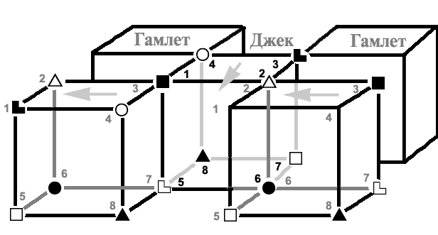

3.6. Деловые: Иисус (Джек, ЛИЭ) ↔ мораль (Гамлет, ЭИЭ)
|
If electricity comes from electrons, does morality come from morons? |
Отношения средней плотности, по ребру. Ссоры легко забываются, но взаимодействие не обеспечивает поддержки.
Деловые отношения часто перерастают в соперничество: партнеры действуют, казалось бы, сходными методами, но добиваются совершенно разных целей. Поэтому нарастает конкуренция, отбрасывающая обоих назад. После переосмысления своих действий партнеры опять сближаются – для нового рывка вперед и еще более опасного сбоя. Каждый считает, что цель другим типом поставлена неверно.
В мобилизованном состоянии отношения улучшаются, партнеры быстро объединяются против общего врага или общей трудности. Спокойное же состояние ухудшает взаимодействие, начинают возникать обиды по мелочам. Деловой паре не следует браться за долгосрочные задачи. Эти отношения побуждают партнеров к достижению краткосрочных целей, обещающих ощутимую отдачу.
Рассмотрим взаимодействие по функциям.
1 ↔ 3, 5 ↔ 7. Взаимодействие 1 → 3 выглядит так, как будто «заслоняют свет», мешают по базе – ролевая, хотя и кратковременна, но навязчива; кроме того, с базы четко видна ее слабая адекватность. Соответственно, Джеку мешают по ЧЛ – т.е. возникает проблема с реализацией идеи спасения. Иисус учил: «Придите ко Мне все труждающиеся и обремененные, и Я успокою вас; возьмите иго Мое на себя и научитесь от Меня, ибо Я кроток и смирен сердцем, и найдете покой душам вашим; ибо иго Мое благо, и бремя Мое легко» (Матф. 11:28-30), т.е. проповедовал успокоение, отречение от мирской суеты и т.д. Однако при этом Иисус все же не учил скорбеть 24 часа в сутки. Сравните с Симеоном Новым Богословом: «Запри двери твоей кельи, сядь в углу ее, отвлеки свою мысль от всего земного, телесного и скоропреходящего. Потом склони подбородок твой на грудь свою и устреми чувственное и душевное око на пупок твой; далее, сожми обе ноздри твои так, чтобы едва можно было дышать...» [47] – ну и т.д. в стиле «с плачем совершай молитвы свои».
Гамлету же Джек мешает проявлять эмоции, пытаясь нормировать их своей ролевой в некий «официальный диапазон». Видимо, именно поэтому на Руси эмоциональные обращения христианского толка куда чаще направлены к богородице, святым и т.п., а не ко Христу лично [48].
Обратное взаимодействие 3 → 1 достаточно слабо. Следует отметить, что вообще 1 → 3 при сознательном отношении и отсутствии перегрузки способствует социализации, однако в обсуждаемом контексте о сознательном отношении говорить не приходится.
Взаимодействие 5 ↔ 7: суггестивная ищет поддержки, а получает ограничение. Создается ощущение навязывания целей, соответственно по БЭ и БЛ. Моралисты, которые сами не в состоянии понять целесообразность своей морали (слабая бессознательная функция), вместо ожидаемых объяснений, поддержки и т.п. получают от последователей Христа по БЛ с ограничительной «у нас верная система, и нечего тут обсуждать». Соответственно, когда Джек пытается разобраться в отношениях, он наталкиваются на аналогичный тезис по БЭ со стороны Гамлета.
4 ↔ 4, 8 ↔ 8. Неприятные отношения – болевые цепляются друг за друга, а объяснить со стороны демонстративной затруднительно. Если не заниматься вербализацией, а работать по принципу «меньше слов – больше дел», то отношения могут идти гладко, но как только разговор пойдет по БС... Поэтому и моралисты, и последователи Христа в ужасе шарахаются от тем, имеющих отношение к физиологии – от удобства быта до секса. «Церковь, сурово осуждая добрачные и внебрачные связи, блуд и прелюбодеяние, запрещая аборты и применение контрацептивных средств, выполняет защитную, спасительную миссию» [49]. Обратите внимание: это пишет доктор медицинских наук (и в этой же статье, откуда взята цитата, он ссылается на телегонию, что еще более показательно). Отметим также, что этот «ревнитель веры» идет дальше официальной позиции РПЦ – она никогда не запрещала контрацепцию. Вопрос «что делать?» не обсуждают ни моралисты, ни христиане – но при этом действуют весьма слаженно. Или – поскольку мы обсуждаем проявление системы взаимоотношений в психике – можно сказать, что у русского обывателя, придерживающегося христианской морали и чтящего Христа, когнитивного диссонанса на эту тему не возникает, а возникает весьма настойчивое желание вообще не касаться столь ужасных для него тем.
2 ↔ 2, 6 ↔ 6. Совместная радость творчества (по БИ) – поэтому отношения и называются деловыми. По референтной (ЧС) происходит взаимообучение. К сожалению, оценить адекватность 6-й функции самостоятельно весьма непросто, а христиане уже «обучались» по ЧС силовым методам (см. выше). Таким образом, моралисты получают подтверждение приемлемости таких методик и с этой стороны… Тем более что средства по блоку эго (творческая функция) тоже совпадают. Поскольку болевые также совпадают, возможна оценка «я в подобном случае поступил бы так же», что усиливает описываемый резонанс.
Из вышесказанного видно, что народная мораль, хотя и отличается от морали
Иисуса, принимается последователями Христа вполне благосклонно. Взаимно
усиливается творческая и деловая активность, несмотря на периодически
возникающие инциденты. Проще говоря: цель при таком взаимодействии теряется, но
общие методы остаются.